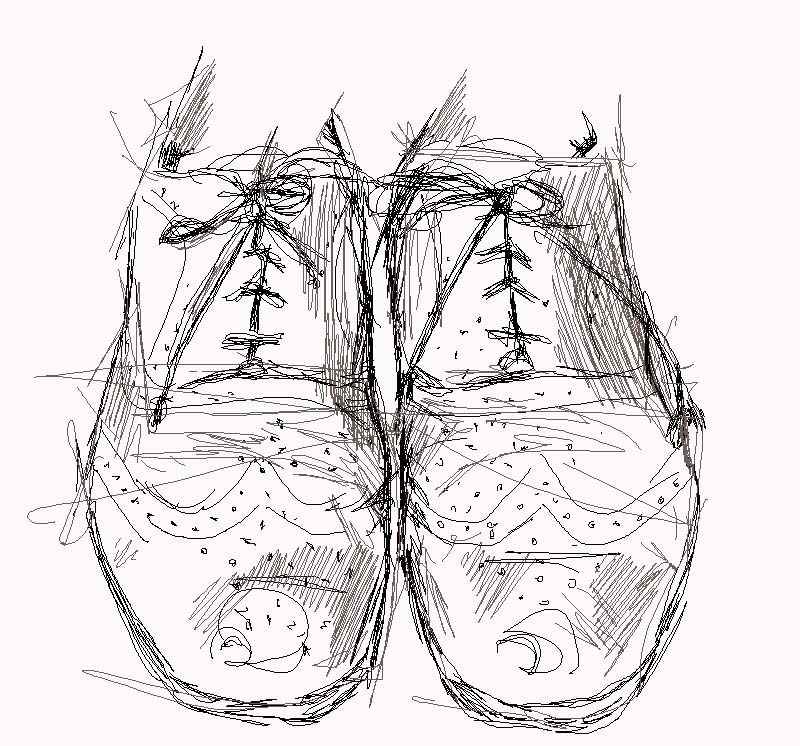
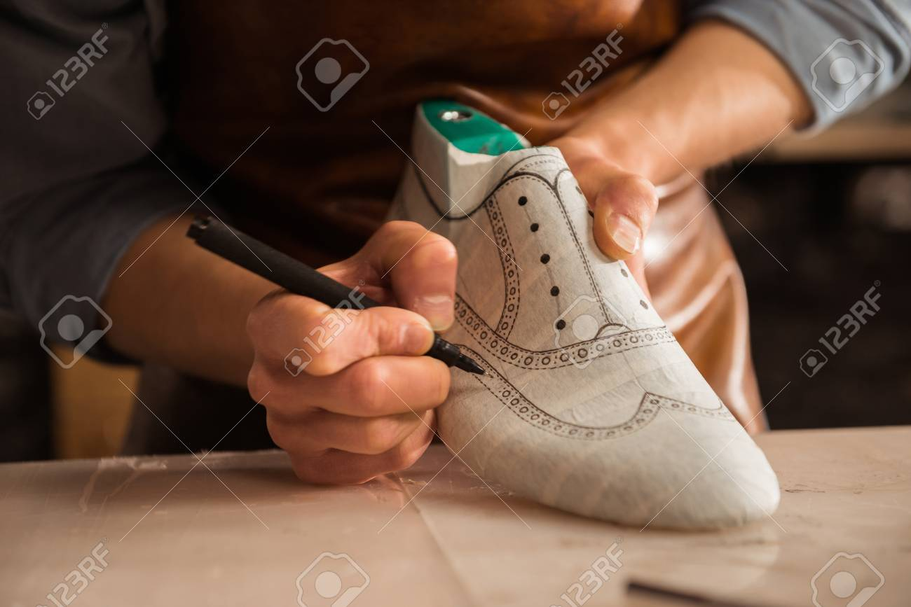
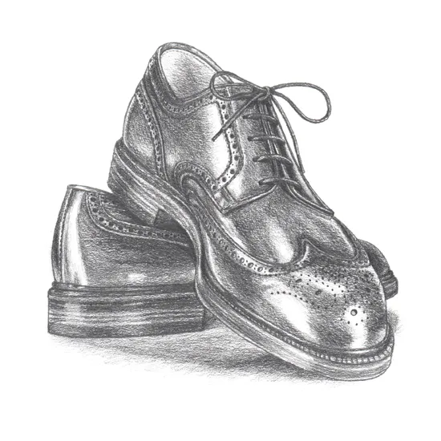
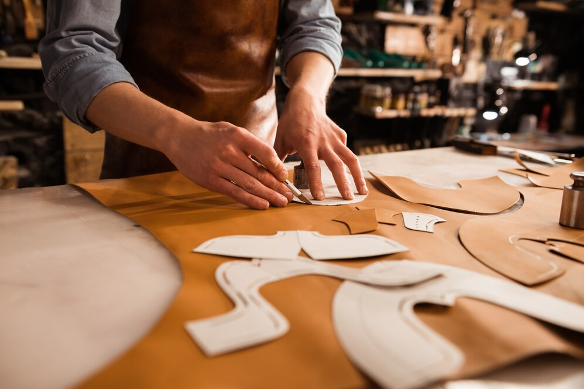
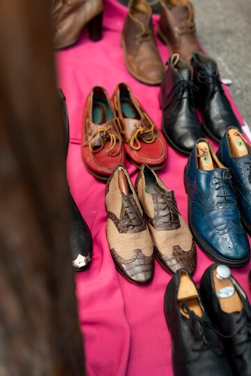

Welcome to Xi5iveGents Shoe Co.! Learn more about the story behind our brand and the driving force behind our passion for men's footwear.
Our Story
Xi5iveGents Shoe Co. was born out of a desire to redefine men's footwear, blending classic sophistication with modern elegance. Our founder, Christian Oti, recognized a gap in the market for high-quality, stylish shoes that catered specifically to the discerning gentleman. Drawing inspiration from his own experiences and aspirations, Christian embarked on a journey to create a brand that embodies craftsmanship, quality, and timeless style.



Meet the Founder
Christian Oti, the founder of Xi5iveGents Shoe Co., is a visionary entrepreneur with a passion for men's fashion and design. With a background in business and a keen eye for detail, Christian brings a unique perspective to the world of footwear. His dedication to quality and innovation drives the ethos of the brand, ensuring that every pair of Xi5iveGents shoes is a testament to craftsmanship and style.
Our Mission and Values
At Xi5iveGents Shoe Co., our mission is simple: to provide men with impeccably crafted footwear that exudes confidence and style. We are committed to upholding the highest standards of quality, using only the finest materials and expert craftsmanship to create shoes that stand the test of time. Our values of integrity, excellence, and customer satisfaction guide everything we do, ensuring that each customer's experience with Xi5iveGents is nothing short of exceptional.
Our Products
On our catalogue page , explore our collection of sophisticated men's footwear meticulously designed and crafted to elevate your style. From classic Oxford shoes to sleek Chelsea boots, each pair is a testament to our commitment to quality and elegance. Discover the perfect shoe for every occasion and make a statement with Xi5iveGents Shoe Co.
Our Commitment
Content: At Xi5iveGents Shoe Co., we are dedicated to excellence in every aspect of our business. From sourcing the finest materials to providing exceptional customer service, we strive to exceed expectations at every turn. Our commitment to quality extends beyond our products to our relationships with our customers, ensuring that every interaction with Xi5iveGents is positive and rewarding.

Our Community
As a proud member of the community, Xi5iveGents Shoe Co. is committed to giving back and making a positive impact. We actively support local initiatives, charitable organizations, and community events, believing that together, we can make a difference. Join us in our mission to build a stronger, more vibrant community one step at a time.

Contact Us
Have questions or want to learn more about Xi5iveGents Shoe Co.? Get in touch with us today! You can reach us by phone, email, or visit us at our store location. Our friendly team is here to assist you with anything you need.